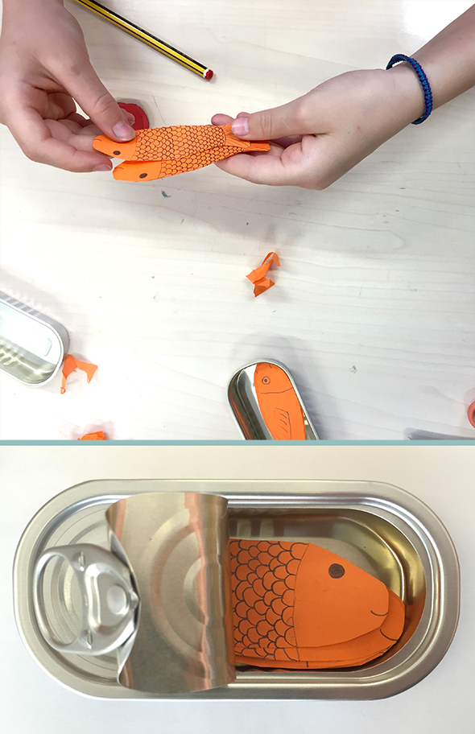

Für die Kleinsten, die am Sonntag zu den Trobades kommen, haben die Schüler der 6ten Klasse CEIP SANTA TERESA ein memory Spiel vorbereitet. 2 Sardinen müssen immer gleich sein, damit sie einen Partner haben, und dann werden sie in einer Dose aufbewahrt.